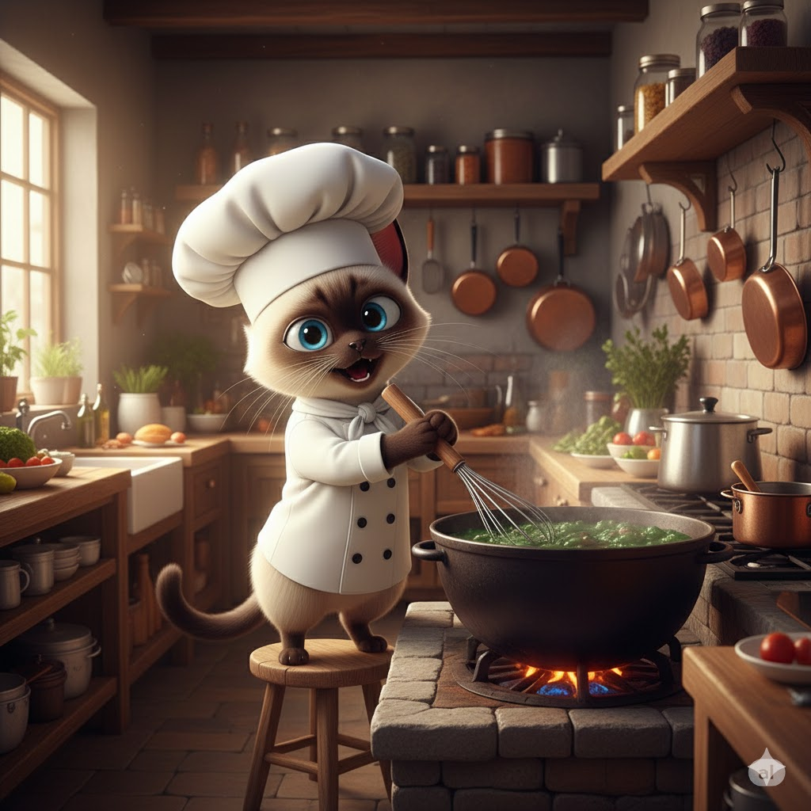

engineering CRUD
engineering Programação Orientada a Objetos
Esta proposta descreve o desenvolvimento de uma aplicação CRUD (Create, Read, Update, Delete) em Python, utilizando princípios de Programação Orientada a Objetos (POO), para gerenciar receitas culinárias e itens de cozinha. A aplicação permitirá aos usuários cadastrar, visualizar, editar e excluir receitas (incluindo ingredientes e passos de preparo).

A aplicação será estruturada em classes para representar as diferentes entidades. Usaremos herança, encapsulamento, polimorfismo e associação para uma arquitetura robusta.
Aqui está uma possível solução para a aplicação proposta: Clique aqui